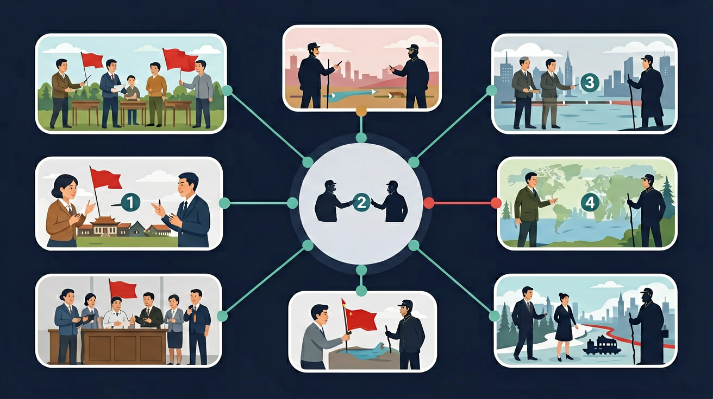

世界现代史部分应包含战争与革命、和平与发展等主题，了解两次世界大战与冷战等重大历史事件。

🎯 能说出两次世界大战的起止时间和主要参战国
🎯 能判断冷战时期美苏对抗的典型事件（如柏林危机）
🎯 能分析核武器对冷战格局的影响
❓ 为什么一战和二战都叫世界大战？它们有什么不同？
❓ 冷战真的没有打仗吗？为什么叫‘冷’战？
❓ 美国和苏联不是一起打德国吗？怎么后来变成敌人了？
学完这一课，这些问题你都能自信地回答。
第一次世界大战的导火索是？
冷战开始的标志是？
两次世界大战与冷战是初中历史的重要内容。世界现代史部分应包含战争与革命、和平与发展等主题，了解两次世界大战与冷战等重大历史事件。
通过了解两次世界大战、冷战等重大历史事件，认识战争与革命、和平与发展是20世纪世界历史的重要主题。
点击时代按钮切换世界格局；结合本课主题观察空间分布。
把卡片拖到核心概念 / 方法技能 / 应用情境 / 常见误区。
拖完 4 项后自动判分。
20世纪上半叶两次世界大战重创人类，战后形成美苏两极格局，进入冷战。冷战以对抗为主，有时缓和，局部热战不断。理解现当代史，要抓住战争教训与和平发展主题。
先对比两次大战影响，再写雅尔塔体系、北约华约、冷战表现（军备竞赛、局部战争等）。
常见误区：常见误区是把冷战理解成没有冲突的和平时期。
冷战的基本特征是？
1. 联合国安理会表决机制：2014年克里米亚危机中，俄罗斯动用一票否决权阻止决议，这正是雅尔塔会议确立的五常机制（1945年）。了解冷战起源就能明白，否决权设计初衷是避免美苏直接冲突，如今仍影响着国际争端解决方式。
2. 核电站技术转化：苏联1954年建成世界首座核电站奥布宁斯克，源自曼哈顿计划（耗资20亿美元）的军事技术民用化。今天全球413座核反应堆中，70%采用压水堆技术，其原型正是美国1953年为潜艇研发的S1W反应堆。
3. 卫星导航系统竞争：GPS（美国1978年首发卫星）与格洛纳斯（苏联1982年部署）的竞争，直接延续自冷战太空竞赛。2023年北斗系统完成组网，全球137个国家使用，这种技术格局正是美苏当年划分势力范围的历史延续。
1. 问题：如果1945年罗斯福未逝世，冷战是否可能避免？分析线索：比较杜鲁门与罗斯福对苏政策差异（如1944年百分比协定），注意斯大林在雅尔塔会议后对东欧的实际控制（红军驻军达120个师），再思考个人因素在结构性矛盾中的作用。
2. 问题：核威慑真的维持了"长和平"吗？分析线索：统计1945-1991年局部战争频率（平均每年2.7场），对照核武器数量增长曲线（从2枚到7万枚），比较朝鲜战争与古巴导弹危机中决策者的风险计算方式，注意"相互确保毁灭"理论的实际运作机制。
先看1919年凡尔赛宫镜厅里的矛盾：克莱蒙梭坚持要让德国"世代记住战败"，结果埋下复仇种子——德国失去13%领土、10%人口，却要支付相当于5万吨黄金的赔款。接着经济大萧条袭来，1932年德国失业率飙升至30%，这才让纳粹党得票从1928年2.6%暴涨至1932年37.3%。当1939年9月1日德军闪击波兰时，其实是一战遗留问题与绥靖政策（英国海军条约允许德国保留35%吨位）共同引爆的火药桶。
二战后的雅尔塔体系更值得玩味：罗斯福用联合国安理会否决权换取斯大林对日作战，却不知红军已秘密将缴获的德国V-2导弹技术送往佩内明德。1947年杜鲁门主义出台时，马歇尔正在哈佛演讲中提到"欧洲病人"需要输血，而莫洛托夫立刻组建共产党情报局反击。最讽刺的是柏林墙（1961年修建时全长155公里），它既是冷战的象征，却意外成为阻止核战升级的保险丝——当1989年11月9日民众推倒围墙时，苏联在东德其实仍驻有38万军队，但戈尔巴乔夫的新思维已让坦克发动机彻底熄火。
最后要看清技术如何改写规则：1945年8月6日广岛原子弹当量仅1.5万吨TNT，到1961年苏联测试的"沙皇炸弹"已达5000万吨。但正是这种毁灭能力催生了"恐怖平衡"，使得1962年赫鲁晓夫最终从古巴撤走导弹——因为双方都明白，按当时美苏拥有的核弹头数量（各约3万枚），足够毁灭地球文明10次。今天的我们仍生活在这个历史实验室里，从朝核问题到乌克兰危机，剧本始终带着两次大战与冷战的基因。
1. 错误表现：认为二战爆发的主要原因是希特勒个人野心。认知根源：学生容易将复杂历史事件简化为个人因素。正确理解：凡尔赛条约的严苛条款（德国赔款1320亿金马克）、1929年经济大萧条（美国GDP下降46%）、绥靖政策（1938年慕尼黑协定）共同构成战争土壤。希特勒只是利用了这些结构性矛盾。
2. 错误表现：混淆冷战"代理人战争"与直接军事冲突。认知根源：对"两极格局"理解表面化。正确理解：朝鲜战争（1950-1953年双方阵亡超200万）本质是美苏通过代理人的较量，而1962年古巴导弹危机（13天核战危机）才是双方直接对峙。冷战期间147场局部战争中，90%属于代理人战争。
3. 错误表现：将马歇尔计划单纯视为人道援助。认知根源：忽视经济手段的政治功能。正确理解：1948-1951年美国向西欧提供131.5亿美元（相当于现在1500亿），要求受援国必须购买美国商品并排挤共产党。该计划使西欧对美贸易依存度从1947年18%升至1951年33%，实质是杜鲁门主义的延伸。
复制提示词到 AI 学伴，生成「两次世界大战与冷战」的时间轴或事件提纲；也可以上传你手绘的示意图，请 AI 学伴点评。
复制后可粘贴到 AI 学伴继续对话。
以下关于一战的描述，正确的是？
通过分析一战和二战的起因、过程和结果，探讨两次世界大战的异同点
关于两次世界大战与冷战的学习，哪种做法最科学？
选一个并查看反馈。
先独立作答，再点选项查看对错与错因。
下列哪一事件标志着冷战的开始？
以下关于二战的描述，哪一项是正确的？
冷战时期美苏两大阵营对峙的主要表现是？
二战期间，盟军在____登陆，开辟了欧洲第二战场。
答案：诺曼底
1944年6月6日，盟军在法国诺曼底地区登陆，成功开辟欧洲第二战场
冷战时期，美国主导的军事组织是____，苏联主导的军事组织是____。
答案：北约、华约
1949年成立北约，1955年成立华约，分别代表美苏两大军事集团
✅ 列举朝鲜战争/越南战争等局部热战
💡 混淆‘美苏直接交战’与‘代理人战争’
✅ 强调苏联斯大林格勒战役的转折意义
💡 好莱坞电影影响认知
口诀：一战萨拉热窝，二战闪击波兰，冷战铁幕演说
类比：美苏冷战像两个巨人背对背掰手腕，谁都不敢转身
（升学题）雅尔塔会议内容不包括？
（迁移题）若某国同时与美俄进行军演，类似？
（图文题）右图柏林墙漫画说明？
点击节点跳转到对应章节；可切换布局。